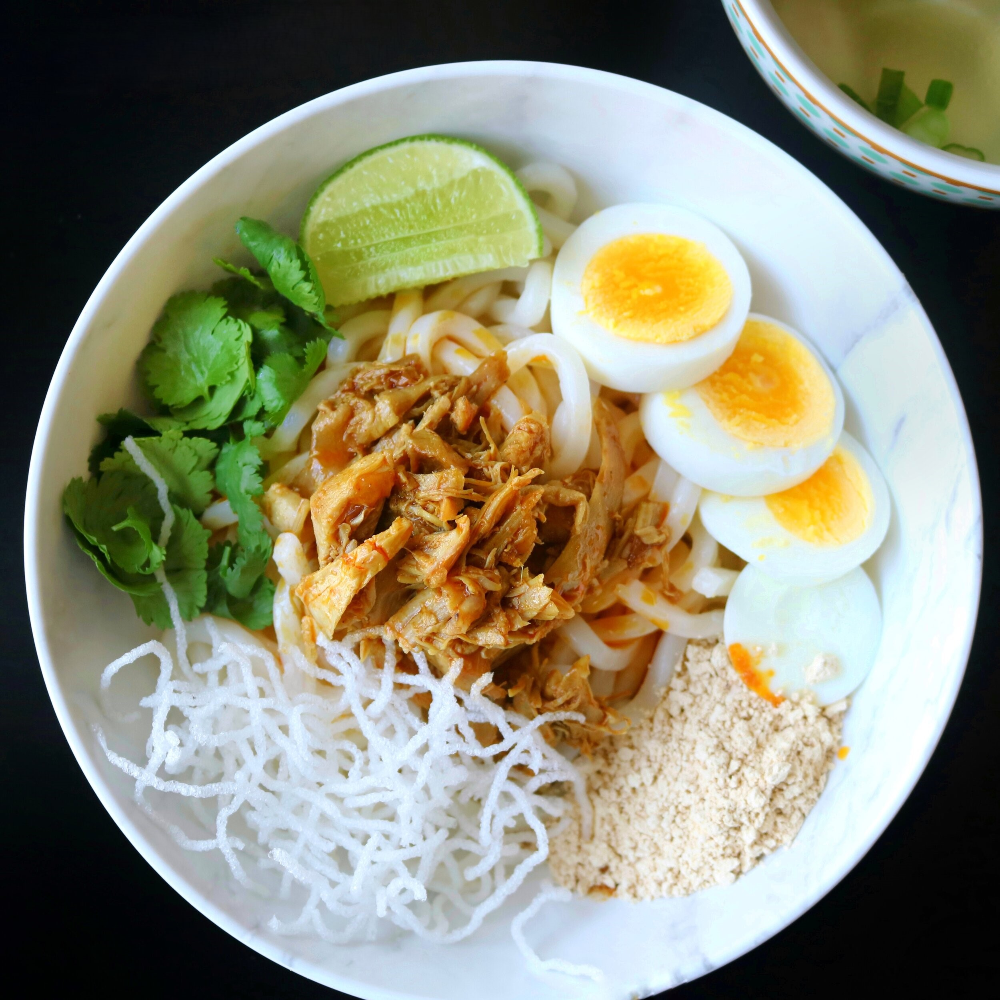

Thick Rice Noodle Salad

Description
I am going to take you to the central dry region of Burma, which is the
home to premium quality nuts, peas and beans, with this thick rice noodle
salad called Nan Gyi Thoke. It features some top-notch produces like
toasted chickpea powder and peanut oil, drawing the best flavors out of
each other as they work harmoniously.
Nan Gyi Thoke is a famous Burmese breakfast item where thick and round
rice noodles are tossed in a rich, nutty dressing. Every slurp is smooth
and flavorful as they are slathered in both dry and wet components of the
dressing including very fine powder of toasted chickpeas, fragrant red oil
filtered from a curry chicken, fish sauce and lime juice. They together
balance the viscosity of the salad while lending a wide range of flavors.
Yes, there is a curry chicken but the meat part plays a less significant
role. It is this deeply flavored oil that is built throughout the
curry-making process, adding the depth and complexity to the dish.
Ingredients
For shredded chicken
- 1 lb. or 3 bone-in skinless chicken legs
- 4 garlic cloves
- 1/2 inch thick ginger piece
- 2 tbsp. fish sauce
- 3 cup water
For chicken curry
- 6 tbsp. vegetable oil
- 1/2 cup chopped onions
- 1 tbsp. minced garlic
- 1/2 tbsp. turmeric powder
- 2 tsp. paprika
- 1 tbsp. fish sauce
For garlic chili oil
- 5 tbsp. dried chili flakes
- 3tbsp. vegetable oil
- 2 garlic cloves, minced
For toasted chickpea powder
-
1 cup chickpea flour, slowly toasted over low heat until golden and raw
smell is gone.
For each serving of noodle salad
- 6 oz. or 1/2 cup cooked thick rice noodles / odon noodles
- 2 tbsp. chicken oil, from the curry
- 2 tbsp. chicken meat, from the curry
- 2tbsp. toasted chickpea flour
- 1 tsp. fish sauce
- 1 tsp. lime juice
- Handful of chopped cilantro
- Slices of hard-boiled egg
-
Crispy rice noodles (thin rice noodles deep fried in a very hot oil for
5 seconds)
- Tad of garlic chili flakes
For the soup (optional)
- 1 tbsp. chopped green onions
- 1/4 tsp. while pepper
- Fish balls or meatballs of your choice
Instructions
Boiling the chicken
-
Boil the chicken over low heat along with garlic, ginger and fish sauce
until the chicken shreds easily with a fork, 45 minutes to an hour.
- Remove the chicken from the stock and save the stock for later.
- Shred the meat using forks.
Making chicken curry
-
Heat the oil and stir-fry the chopped onions and minced garlic until
they are evenly brown.
- Add the turmeric powder and paprika.
- Mix in the shredded chicken and coat every piece with oil.
- Season with fish sauce and add 2 tbsp. of chicken stock.
- Cook away all the liquids for about 3-4 minutes.
- Turn the heat off and remove the pan from the stove.
-
Tilt the pan and push all the chicken to the higher side letting all the
oil to flow down.
- Spoon all the oil in a separate bowl.
Making garlic chili oil
- Heat the oil and fry the minced garlic till fragrant and light brown in color.
- Remove the pan from heat and immediately add the dried chili flakes.
- Stir well then let the oil cool.
Assembling the noodles
- Toss the noodles with the chicken oil, toasted chickpea powder, shredded chicken, hard boiled egg and chopped cilantro.
- Season with fish sauce, lime juice and garlic chili flakes.
- Mix well and adjust the seasoning to your taste.
Making the soup (optional)
- Bring the chicken stock to a boil
- Add the fish balls and simmer the soup until they are cooked.
- Top with green onions and white pepper powder.